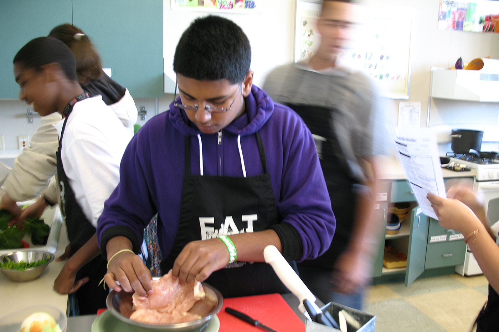
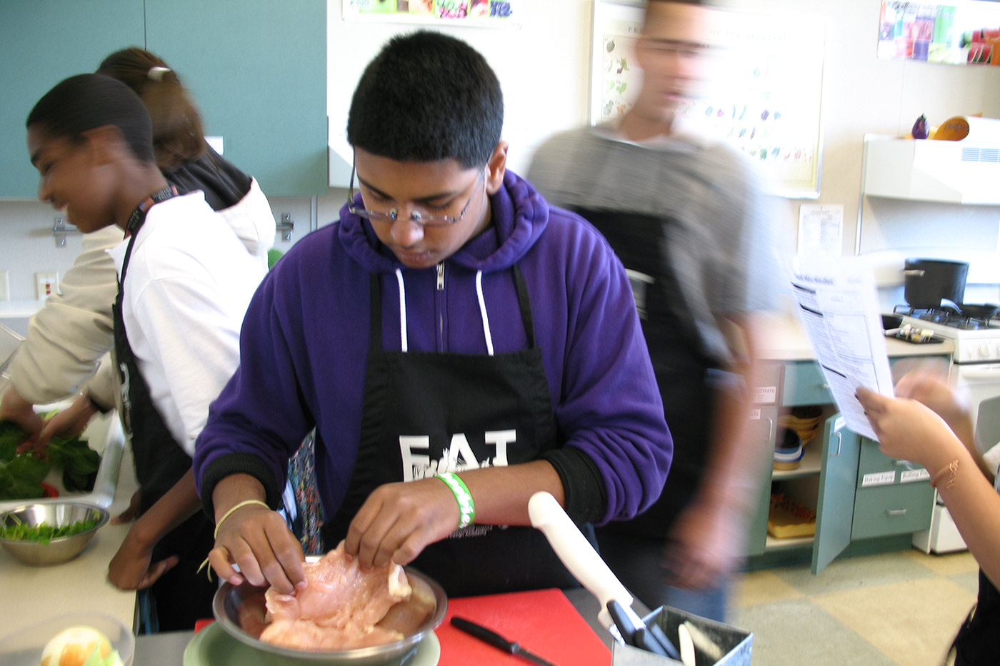

July 23, 2014
From beehive to teacup
A new report on the carbon footprint of honey production and pollination services in California. Our calculator tool can help beekeepers track the footprint of their own operation.
 

Healthy agriculture and food systems are fundamental to our quality of life in California. We’re committed to strengthening California’s agriculture by advancing knowledge of the science of sustainability, supporting farmers and ranchers working to develop more sustainable agricultural practices, and assisting communities in building strong and healthy regional food systems.
Learn more about UC SAREP »
Improving the food system by linking production, distribution, and consumption. We offer resources to help communities build local food economies, to help farmers build their markets, school districts improve the health of their students, and more.
Improving agricultural production alongside the environment. We help farmers and ranchers learn science-based sustainable farming practices that can improve their businesses while minimizing their impact on the environment and the health of California’s agricultural communities.
Our cross cutting initiatives address the challenges that span the entire food system, from sustainable sourcing to farm-worker and food-worker well-being, we’re working to meet the challenges that farmers, food companies, and consumers must face together.
July 23, 2014
A new report on the carbon footprint of honey production and pollination services in California. Our calculator tool can help beekeepers track the footprint of their own operation.
July 23, 2014
Connect with researchers about nutrient management practices, learn from California growers to build your knowledge, search through current UC research on nutrient management.
July 23, 2014
We're helping food companies better determine the sustainability of the agricultural materials they purchase.